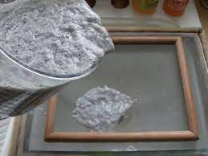
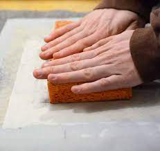
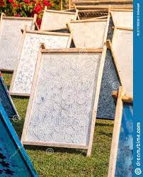
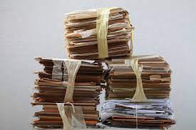

I've been rocking my handmade paper out newspaper and other types of "recyclable" papers, but I found that already recycled paper (post-consumer) is the best for achieving durable yet flexible handmade paper.
Where to find this awesome material? Grocery stores.
One use for the material is creating small pallets for produce, like apples. It keeps the individual fruits/vegetables from bouncing around ontop or into one another during transport. Kind of like how an egg carton secures the eggs but isn't completely stiff and rigid.
To be as green as possible, I cut out a few things used in other paper making instructables.
You will only need the mold/deckle, a household sponge, one "apple pallet", a mixing spatula, and a blender.
The mold/deckle can be created using old picture frames or even just scrap wood you have lying around. To create my deckle, I used a screenprinting frame by removing the silkscreen and replacing it with a nylon-type mesh used for screen-windows. The mesh is relatively cheap and durable. For the mold, I used an old picture frame.
Any household sponge will work.
Any grocery store should have some of these "produce pallet/carton" things lying around somewhere. To save gas and time, you may want to call ahead.
If you cook/bake, you probably already have a mixing spatula in a drawer somewhere. But a word to the wise, once you use it for paper-making, buy a new one for cooking.
As for the blender, once you use it for paper-making it's not a good idea to use it for making anything else. So if you use your blender a lot for cooking, juicing, or whatever, maybe purchasing another one at a thrift store or a yard sale would be good.
Tear up the apple carton into small pieces. The smaller the better.
Put the pieces into the blender.
Fill the blender with at least 2x as much water as pieces. Too much water is better than too little.
Place the blending pitcher on the base and turn the blender on.
I use 2-3 different settings just to make sure the material breaks down well. Depending on how much material and water you have put together, starting out with a "chop" setting or "puree" might be best. Then use the "liquify" setting for about 30 seconds to finish the job.
The material and water mix should have the consistency of a thick soup.
This is where I cut out some of the tools needed to make this process a bit greener than the usual DIY recycling paper process.
Instead of pouring your material/water mixture into a plastic tub, set the deckle directly over a sink. It makes clean up a lot faster as well!
Once the deckle is set and level over the sink, place the mold ontop. Make sure the mold is set as straight and parallel to the deckle's sides as possible.
Pour your mixture directly onto the deckle, keeping it within the mold's edges. Make sure you pour the mixture as evenly as possible. When the mold is pretty well filled, use the spatula to smooth out lumps. Be careful not to use too much pressure when smoothing the mixture b/c the moisture will drain too fast and create lumps, which are no fun to work with! Remove the mold when you are satisfied with the evenness of your mixture. Don't sweat it if the mixture isn't perfectly even. *If the mixture is too lumpy for your liking, just scrap it right back into the blender, add more water, and blend it a bit more.
It's best to have a second deckle for this step but it can be done using a piece of felt. Using a second deckle, place it on top of the mixture, so that both deckles are flat against one another. *If you use a piece of felt, place the felt ontop of the mixture as well, and follow the next steps. Press your sponge down with gentle force. You will hear the water draining from the mixture as you apply force. Make sure you spot-press the sponge and don't drag it across the mesh. Dragging the sponge will pull the mixture through the mesh! When you no longer hear the water draining from the mixture it's ready to start drying.
I found the fastest, and best, way to dry a newly recycled sheet of paper is to place it flat between 2 pieces of nylon mesh, preferably with the top piece having weight around its edges so the sheet dries flat. Basically, place a scrap piece of the nylon mesh over the top of the newly recycled sheet, which is still on the deckle, flip the entire set-up over so the deckle is now ontop and the scrap piece of nylon mesh is on bottom. Be careful to keep the scrap piece of nylon mesh tight when flipping or the sheet will fall apart. I used a craft box to place the set-up on so the deckle's frame can weight down the edges of the sheet. *If you used felt in a previous step, follow these same steps only replace the scrap piece of nylon mesh with the felt.
Once you feel comfortable with the paper-making process, you can start experimenting with different colors of paper, etc. Adding a water-based paint can turn a dull mixture into a colorful piece of paper!
